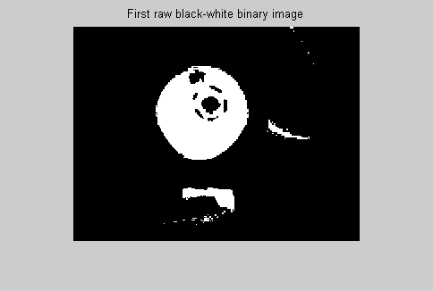
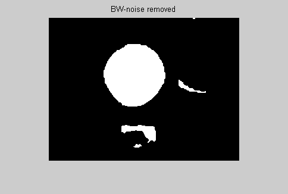
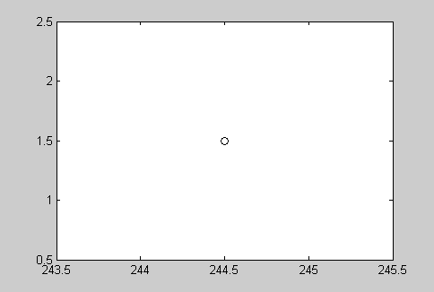
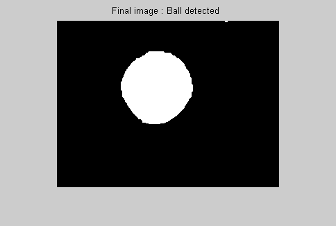
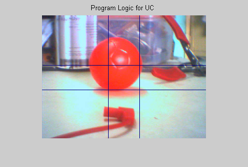

Contents
- "IMAGINE"- the autonomous computer controlled robot
- Infinite loop program
- STEP2: Remove noise from image
- STEP3: Fill a gaps and sharp corners
- STEP 4: Find the boundaries and label different regions
- STEP 5: Roundness
- Go back if ball is too closer
- Send characters to serial port according to the position of centroid
"IMAGINE"- the autonomous computer controlled robot
The following program will acquire the image from the webcam , process the image to find the red ball and give the appropriate control signals to the micro-controller( AVR ATMEGA series ) via the serial port of the computer.
Authors: Sandesh Gandhi and Kiran Tidake. Copyright 2007 Sandesh Gandhi and Kiran Tidake
clc clear all; dbstop if error; pause(1) %%STEP1: Initialisation %ser=serial('COM1','Baudrate',1200); %fopen(ser) % Input video initialisation %vid= videoinput('winvideo',1,'RGB24_320x240'); % Configure the video object for manual trigger mode. %triggerconfig(vid, 'manual'); %set(vid,'FramesPerTrigger',1); %preview(vid) %set(vid,'TriggerRepeat',0); %start(vid); pause(3)
Infinite loop program
%while(1) pause(0.1) % rgb = getsnapshot(vid); rgb=imread('rball.bmp'); figure;imshow(rgb),title('Original Input image') [a b c]=size(rgb); y=a; x=b; rgb1=rgb(:,:,1); rgb2=rgb(:,:,2); rgb3=rgb(:,:,3); bw =((rgb1 >= 220) & (rgb2 <= 100) & (rgb3 <= 100) );% 225 125 120 % hold on;imshow(bw) figure;imshow(bw),title('First raw black-white binary image')
STEP2: Remove noise from image
bw = bwareaopen(bw,8); %This removes from a binary image all connected components (objects) %that have size fewer than 16 pixels. figure;imshow(bw),title('After bwareaopen')
STEP3: Fill a gaps and sharp corners
se = strel('disk',4); %strel(shape,parameters) creates a structuring element:se, of the type %specified by shape. The radius= 4pixels bw = imclose(bw,se); % imclose(IM,SE) performs morphological closing on the grayscale or % binary image IM, returning the closed image figure;imshow(bw),title('After imclose') % fill any holes, so that regionprops can be used to estimate % the area enclosed by each of the boundaries bw = imfill(bw,'holes'); % imfill(BW,'holes') fills holes in the binary image BW. A hole is a set % of background pixels that cannot be reached by filling in the % background from the edge of the image. figure;imshow(bw); title('BW-noise removed');
STEP 4: Find the boundaries and label different regions
% Concentrate only on the exterior boundaries. Option 'noholes' will % accelerate the processing by preventing |bwboundaries| from searching % for inner contours. [B,L] = bwboundaries(bw,'noholes'); %Traces the boundaries stats = regionprops(L,'Area','Centroid'); % regionprops(L,properties) measures a set of properties for each labeled % region in the label matrix L. Positive integer elements of L correspond % to different regions. For example, the set of elements of L equal to 1 % corresponds to region 1; circle_threshold = 0.80; % define circle threshold % loop over the boundaries
STEP 5: Roundness
For a circle (4pi x Area)/(perimeter^2) = ( 4*pi*pi* r^2)/((2*pi*r)^2 )=1 For any othe figure this ratio is less than 1
for g = 1:length(B) % obtain (X,Y) boundary coordinates corresponding to label 'g' boundary = B{g}; % compute a simple estimate of the object's perimeter delta_sq = diff(boundary).^2; perimeter = sum(sqrt(sum(delta_sq,2))); % obtain the area calculation corresponding to label 'g' area = stats(g).Area; % compute the roundness metric metric = 4*pi*area/perimeter^2; % Find the circle if metric > circle_threshold centroid = stats(g).Centroid; plot(centroid(1),centroid(2),'ko'); % break; else [r,c] = find(L(:,:)==g); % [r,c] = find(bwlabel(bw)==g); bw(r,c)=0; end end
Go back if ball is too closer
%hold on;imshow(bw) figure;imshow(bw),title('Final image : Ball detected ') area_threshold= 0.125*a*b; if (area > area_threshold) % fprintf(ser,'B'); fprintf('B'); %backward end
Send characters to serial port according to the position of centroid
figure;imshow('rballshow.bmp'),title('Program Logic for UC ') cenx=centroid(1); ceny=centroid(2); X1=x/2+30; % center region of the frame Y1=y/2+30; X2=x/2-30; Y2=y/2-30; if (cenx>X2 && cenx<X1) if (ceny>Y2 && ceny<Y1) % fprintf(ser,'E'); fprintf('E'); %stop elseif (ceny<Y1) % fprintf(ser,'A'); fprintf('A'); %forward elseif (ceny>Y2) %fprintf(ser,'B'); fprintf('B'); %backward end end if (ceny<y/2) if (cenx>X1) % 1st Quadrant % fprintf(ser,'D'); fprintf('D'); % go forward and turn right elseif (cenx<X2) % 2nd Quadrant % fprintf(ser,'C'); fprintf('C'); %go forward and turn left end end if (ceny>y/2) if (cenx>X1) % 4th Quadrant % fprintf(ser,'D'); fprintf('D'); %go back and turn right elseif (cenx<X2) % 3rd Quadrant % fprintf(ser,'C'); fprintf('C'); % go back and turn left end end %--------all ifs end-------- %end % while loop ends % closepreview(vid) % stop(vid) % delete(vid) % clear vid % fclose(ser) % delete(ser)
D